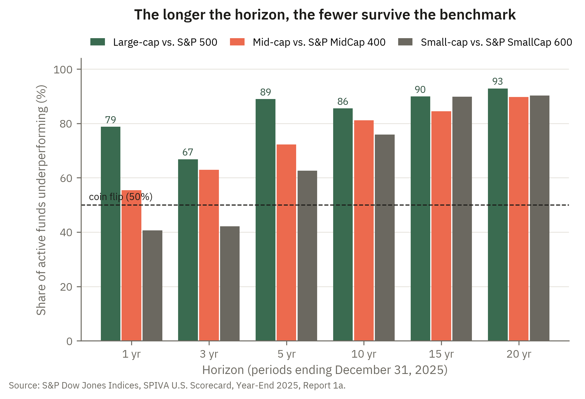

7 The efficient markets hypothesis
7.1 Introduction
Three questions give this chapter its organizing logic. First, what does it mean to say a market is “efficient,” and how do the three standard versions of that claim — weak, semi-strong, and strong — differ in what they assume prices already reflect? Second, what are the precise empirical implications of each level of efficiency, and what kinds of trading strategies would each render unprofitable? Third, even if individual investors display systematic psychological biases, does that necessarily mean market prices will be distorted, or can arbitrageurs correct for those biases? Together these questions trace a path from the information contained in prices all the way to the aggregate efficiency — or inefficiency — of the market.
The first question matters because “efficiency” is not a single thing. Weak-form efficiency asserts only that past price history contains no exploitable information. Semi-strong efficiency is more demanding: it asserts that all publicly available information — earnings, filings, news — is already impounded in prices. Strong-form efficiency is the most demanding of all: it asserts that even private, insider information is reflected in prices. The distinction is crucial because it determines how much information one is willing to assume the market has already digested before drawing conclusions about what analysis can accomplish.
The second question translates these levels into testable empirical claims. Weak-form efficiency rules out profitable technical analysis, since it holds that patterns in past prices cannot be exploited. Semi-strong efficiency rules out returns to fundamental analysis and factor-based strategies, since all public information is already priced. Strong-form efficiency rules out profits even from insider trading. Each form has direct implications for the value of different investment strategies, and the chapter is candid about the formidable empirical difficulties in testing any of them.
The third question — whether individual behavioral biases translate into market-level inefficiency — grounds the chapter’s discussion of behavioral finance. Psychologists have documented robust and systematic departures from expected-utility maximization: overconfidence, representativeness bias, loss aversion, and others. But the existence of such biases at the individual level does not automatically imply that prices will be distorted, because rational arbitrageurs can in principle trade against biased investors and eliminate the resulting mispricings. Whether they actually do so depends on whether arbitrage is limited by transaction costs, financing constraints, or the risk that mispricings worsen before they correct — a set of frictions that the chapter examines as the boundary conditions for behavioral influences on asset prices.
The chapter then draws out the close kinship between market efficiency and the CAPM. Because the CAPM’s sharp “no free lunch” conclusion rests on six assumptions, the chapter examines each in turn and asks how strong it really is, and it uses that examination to make precise what alpha means: a return in excess of what a pricing model warrants, which can arise either because a CAPM assumption fails or because the efficient markets hypothesis does — the joint-hypothesis problem that makes any measured alpha ambiguous. Turning this logic to personal use, the chapter closes by developing the CAPM as a practical checklist for evaluating any investment pitched as offering high returns with little risk: walking through the assumptions one at a time reveals which risk, if any, a purportedly extraordinary opportunity is really paying you to bear — and when the honest answer is none, that the promised returns are almost certainly illusory.
The efficient-markets hypothesis makes a testable prediction: most professional managers should not be able to beat the market after fees. CNBC reported that fewer active managers beat their index benchmarks again last year — part of a long pattern that has pushed trillions of dollars from active funds into low-cost index funds. Whether that pattern reflects truly efficient prices, and what the exceptions tell us, is the question this chapter takes up. Read it at CNBC.
Market Insight
The news item above has a remarkably stable statistical shadow. Twice a year, S&P’s SPIVA scorecard counts the fraction of actively managed U.S. funds that failed to beat their benchmark, and Figure 7.1 shows the latest tally by horizon. Two features deserve attention. First, even over a single year, active large-cap funds underperform far more often than a coin flip would suggest — 79% in the most recent year. Second, and more telling, the failure rate rises with the horizon: 89% of large-cap funds trail the S&P 500 over five years and 93% over twenty. That pattern is exactly what the efficient markets hypothesis predicts. If prices already impound public information, a manager’s gross return is approximately the market’s plus noise, and fees subtract from it every single year; over long horizons the noise washes out while the fee drag compounds, so ever fewer funds stay ahead. Note the one wrinkle: small-cap managers fare noticeably better at short horizons — 41% underperforming over one year — which is just where one would expect prices to be furthest from fully efficient. Even there, however, nine in ten trail their benchmark once the horizon stretches to fifteen years.

7.2 The efficient markets hypothesis
The efficient markets hypothesis is a term that has many definitions. All of the definitions center around the idea that participants in the market will use all of the available information in a market as soon as it becomes available and hence that trading on information will likely have no value. Some imprecise definitions of the efficient market hypothesis are
- Weak-form efficient markets hypothesis.
-
The assumption that all data that is available from observing the history of market prices has already been incorporated into current market prices. Thus, investment strategies that rely on past market data should not yield returns to investors beyond what the investors can expect from holding the market requisite amount of risk.
- Semistrong-form efficient market hypothesis.
-
The assumption that all information available from observing any publicly available data has already been incorporated into the market price. Thus, investment strategies that rely on earnings or other balance sheet data should not yield returns to investors beyond what they can expect from holding the market requisite amount of risk.
- Strong-form efficient market hypothesis.
-
The assumption that asset prices reflect all information that is relevant to the payoffs of that asset. This includes all the information that a CEO or other insider might know.
Note that these hypotheses imply that certain trading strategies will not be successful. For example the weak-form assumption implies that Technical Analysis is unlikely to be successful. Likewise, the semistrong-hypothesis implies that both fundamental analysis and quantitative (factor) models are likely to not be successful. The strong-form hypothesis implies that no analysis, including insider trading, will help in picking stocks. If the strong form hypothesis holds then there is no reason for anyone to ever hold anything but the market portfolio (i.e. everyone should have a passive strategy).
Of course these are only assumptions. One might want to test whether these hypotheses are true. There are several reasons why testing these hypotheses is difficult. The first is that if you truly had a very profitable trading strategy you would never tell anyone about it. Instead you would make millions on your own and once it stopped working you would tell people about it. Also, unless markets are highly inefficient, the volatility of the market would make it hard to notice a strategy that increased returns by 5%. An increase of 20% would be observable, but the ability to have such an increase would mean the market was really inefficient. A third reason is that we can only observe finite time periods of data. Being successful over 5 years (or 10 or 20) does not necessarily imply that you have a successful trading strategy. You may be a monkey who picked stocks by throwing darts, but happened to throw darts in the right direction.
7.3 Behavioral Finance
There is some indication that the expected utility model with no other constraints does not generate predictions that reflect the data that is observed about asset prices. The field of behavioral finance (and behavioral economics in general) has sought to improve the predictions of traditional economic models by changing the set of assumptions that underly the preferences of the participating agents. Often these changes are based on research performed by psychologists about the nature of individual decision makers. These psychologists speak of behavioral "biases" that are evidenced by behavior that is inconsistent with expected utility. Some of these biases have to do with the ability of investors to process information. These include (one should read the definitions of these in the book)
- Overconfidence.
-
Some individuals overestimate the precision of their beliefs or forecasts. This may cause them to take larger positions in particular equities than they would otherwise take.
- Representativeness bias.
-
This is sometimes called "the law of small numbers." It is the bias that at times individuals believe that small samples provide a better estimate than they actually do about the future. This leads investors to invest based on extrapolated trends that are not believed to be as noisy as they really are. If all investors do this, it has been shown that mutual funds with otherwise irrational managers may survive.
Others have to do with the nature of investors' vN-M utility functions. These are discussed in the book and include prospect theory, regret avoidance, framing and others.
Note that simply because individuals display these types of biases does not imply that market prices will display biases consistent with these individual behaviors. If arbitrageurs are able to profit from the existence of these traders, then they may drive the resulting mispricings out of the market. Thus, in order for these behaviors to have an effect on market prices, it must be true that there is some limit to the ability of these arbitrageurs to buy and sell in the market. Can you think of some of these limits? (Transactions costs, etc.)
7.4 How strong are the CAPM assumptions?
The efficient markets hypothesis and the CAPM are close relatives. The CAPM makes a very sharp version of the “no free lunch” claim: in equilibrium every asset lies on the security market line, so its expected return is exactly \(r_f + \beta_i(Er_M - r_f)\) — compensation for its systematic risk and nothing more. There is no room for a positive “alpha,” no room for an investment whose expected return exceeds what its risk warrants. That is a powerful conclusion, but it is only as strong as the assumptions it rests on. Recall the six assumptions of the CAPM, and notice that on closer inspection each of them can seem very strong.
- All investors are price takers.
-
This treats every participant as too small to move prices. But some players are clearly large enough to affect the prices at which they trade — a large institution unwinding a position, an activist investor, or a single large order in a thin or illiquid market. When a trader’s own actions move prices, the tidy competitive equilibrium behind the CAPM is disturbed.
- One identical holding period.
-
Investors plainly do not share a single horizon. A twenty-five-year-old saving for retirement, a retiree drawing income, and a trading desk judged on quarterly performance are optimizing over very different lengths of time. The single-period framing also ignores that the investment opportunity set itself shifts over time, so that a long-horizon investor may rationally want to hedge against future changes in interest rates or expected returns — considerations the one-period model cannot see.
- All investments are publicly traded.
-
This is perhaps the strongest assumption of all. Enormous fractions of real wealth are not tradable: your human capital and future labor income, privately held businesses, closely held real estate, and the returns to education. These assets are correlated with the market and cannot be freely diversified or hedged, so the “market portfolio” the theory prices is not the true portfolio of aggregate wealth. An investor whose largest asset is her own earning power faces a risk-return problem the CAPM does not fully describe.
- No transactions costs and no taxes.
-
Real trading incurs commissions and bid-ask spreads, and returns are taxed. Taxes in particular differ across investors — capital gains rates, holding-period rules, and the distinction between taxable and tax-advantaged accounts all drive a wedge between what different investors will pay for the very same stream of cash flows. Once such wedges exist, investors need not agree on prices even if they agree on everything else.
- All investors are mean-variance optimizers.
-
Mean-variance optimization is exactly correct only under quadratic utility or (roughly) normally distributed returns. But investors demonstrably care about more than the mean and the variance. They care about downside risk, about skewness and lottery-like payoffs, and about the possibility of ruin. The behavioral biases discussed in the previous section are themselves direct departures from this assumption.
- Homogeneous expectations.
-
Investors visibly disagree about the means and variances of asset payoffs. Analyst price targets diverge, and the sheer volume of trade is hard to reconcile with universal agreement — if everyone truly held identical beliefs, there would be far less reason to trade with one another at all. Disagreement is the normal condition of financial markets, not the exception.
7.5 What does alpha mean?
The discussion above referred informally to an investment that offers “more return than its risk warrants.” That idea has a name. Alpha is the return an asset or portfolio earns in excess of what a benchmark asset-pricing model says it should earn given its risk. When the benchmark is the CAPM, the relevant risk is systematic risk and the benchmark return is the security market line, so the alpha of asset \(i\) is
\[\alpha_i = Er_i - \big[\, r_f + \beta_i(Er_M - r_f)\,\big].\]
Geometrically, \(\alpha_i\) is the vertical distance between the asset’s expected return and the security market line: a positive alpha means the asset plots above the line, delivering more than its beta would entitle it to, while a negative alpha means it plots below. If both the CAPM and the efficient markets hypothesis hold, then every asset lies exactly on the line and \(\alpha_i = 0\) for everything. A nonzero alpha is therefore not a free-standing fact; it is a statement that something in that joint prediction has given way. There are two distinct ways this can happen.
The first is that the CAPM is simply the wrong benchmark — one of its assumptions fails. If trading is not frictionless, if investors hold large non-traded assets such as human capital, if they care about more than mean and variance, or if they do not share the same beliefs, then the security market line is not the correct description of equilibrium expected returns. In that case an asset can show a positive alpha relative to the CAPM while earning exactly fair compensation for some risk the CAPM leaves out. Here the alpha is an artifact of measuring against the wrong model — a “bad benchmark” — rather than a genuine reward in excess of risk.
The second is that the CAPM correctly describes the trade-off between risk and return, but the efficient markets hypothesis fails, so prices depart from the values that available information implies. Then a nonzero alpha reflects a true mispricing: a return available, at least for a time, to an investor who identifies it before prices adjust.
Because either channel — a broken pricing-model assumption or a failure of market efficiency — can produce the same number, a measured alpha is never self-interpreting. This is the joint hypothesis problem: any test of alpha is simultaneously a test of the pricing model used to define it and of market efficiency, and a nonzero estimate on its own cannot say which is responsible. A third possibility further complicates matters, namely that an estimated alpha is nonzero purely by chance in a finite sample of returns, an issue the performance-measurement material takes up when it distinguishes skill from luck.
This section takes no position on how large alpha typically is, or on whether investors can reliably identify it in advance. Those are empirical questions, and reasonable people disagree about the answers. The narrower point here is definitional: alpha is a return that a given asset-pricing model cannot account for, and its existence in any particular case depends on a violation of that model’s assumptions or of the efficient markets hypothesis.
7.6 The CAPM as a personal investment checklist
None of this means the CAPM is useless. On the contrary, once you appreciate how demanding its assumptions are, the model becomes a remarkably practical guide to personal investing — especially when you are being pitched an opportunity you did not go looking for. Sooner or later a family member, a friend, or a friend of a friend will describe an investment that supposedly offers high returns with little corresponding risk. The CAPM gives you a disciplined way to think about that claim.
The logic is simple. The CAPM result says that unless one of its six assumptions is violated, there cannot be a project or investment opportunity that delivers returns higher than its risk would predict. Every legitimate opportunity sits on the security market line. So when someone asserts that an investment beats that line — high return, modest risk — you are left with only two possibilities. Either the claim is simply false, or one of the assumptions is genuinely being violated in a way that creates the opportunity. The value of the CAPM is that it hands you a checklist for telling these two cases apart. Walk through the assumptions one at a time and ask which one the pitch relies on:
Is the return really compensation for illiquidity or non-tradability? A private business, a startup, or an interest in real estate is not publicly traded (assumption 3). Its extra return may be payment for the fact that you cannot easily sell it or diversify it away — a real risk you would be bearing, not a free lunch.
Is there a genuine tax advantage? If the opportunity exploits a feature of the tax code that applies to you (assumption 4), the higher after-tax return may be real — but it depends on your specific tax situation, not on any mispricing.
Do you actually possess information others don’t? An edge that depends on private information touches both the strong-form EMH and the homogeneous-expectations assumption (assumption 6). Be honest about whether you truly know something the market does not — and whether acting on it is even legal.
Is the “high return” hiding a fat downside? Many high-return pitches are really lottery tickets or strategies that pay off steadily until they collapse (assumption 5). Mean-variance intuition understates that danger; the return is compensation for a tail risk you may not want.
Could someone be moving the price? If the opportunity depends on a large player pushing prices around (assumption 1), you need to ask whether you are the one benefiting from that or the one being taken advantage of.
If you go through this list and cannot identify any assumption that is plausibly violated, then the CAPM’s verdict is blunt: the promised returns are almost certainly illusory, mismeasured because the risk is being ignored, or outright fraudulent. And when an opportunity is real, naming the specific assumption it violates tells you exactly what risk you are being paid to bear — and whether you are the right person to bear it.
The checklist above assumes you can weigh a pitch dispassionately. But the most dangerous “high return” offers arrive through exactly the channel that tends to switch off scrutiny: a trusted member of your own community — the family member or friend who introduced the opportunity to you in the first place. This is affinity fraud, fraud that spreads through tight-knit groups in which shared identity substitutes for due diligence.
The empirical record bears this out. Analyzing data on more than half a million participants in the collapsed U.S. pyramid scheme Fortune Hi-Tech Marketing, Bosley and Knorr (2018) found that recruitment flourished in counties with identifiable affinity groups, with religious communities prominent among them. Reviewing why people join such schemes, Hock and Button (2023) point on the participants’ side to the vision of high reward for little work, and on the organizers’ side to the deliberate exploitation of specific groups combined with high-pressure sales — with victims frequently enlisted to become recruiters themselves.
The connection to this chapter is direct. When a relative or fellow congregant offers you an opportunity with unusually high returns, the trust you place in the messenger does the work that the CAPM says the numbers cannot: it makes an off-the-security-market-line promise feel safe. The checklist is precisely the antidote. Run through the assumptions regardless of who is pitching — and treat a trusted-community source not as a reason to skip the checklist but as a reason to work through it more carefully.
- Bosley, S. and Knorr, M. (2018), “Pyramids, Ponzis and fraud prevention: lessons from a case study,” Journal of Financial Crime, 25(1), 81–94. https://doi.org/10.1108/JFC-10-2016-0062
- Hock, B. and Button, M. (2023), “Why do people join pyramid schemes?,” Journal of Financial Crime, 30(5), 1130–1139. https://doi.org/10.1108/JFC-09-2022-0225
7.7 Application: A saver choosing index or active
A university employee reviewing the menu of funds in her retirement plan faces a deceptively simple question: should she pay for an actively managed fund that promises to beat the market, or accept the market’s return through a low-cost index fund? The efficient-markets hypothesis is the framework that answers her. If prices already impound available information, then consistently identifying mispriced securities is extraordinarily difficult, and the fees charged by active managers become a near-certain drag on her returns — which is precisely what the long-run evidence on active underperformance shows. Understanding the different forms of market efficiency, and the anomalies that genuinely challenge them, lets her judge how much, if anything, she should be willing to pay in pursuit of returns above the index.
Planet Money (NPR) — “Summer School 2: Index Funds & The Bet”: Warren Buffett’s million-dollar wager that a simple index fund would beat the experts — a real-world test of market efficiency.
7.8 Homework problems
7.8.1 Conceptual
EMH-C1. A hedge fund advertises a proprietary system that studies charts of past prices and trading volume to time entries and exits. State which form of the EMH, if true, would render this strategy unprofitable in expectation, and explain why. Then contrast this with a fund that trades on newly released accounting ratios: which form is required to rule out that second strategy, and why is it a stronger assumption?
EMH-C2. Carefully distinguish the three forms of the efficient markets hypothesis by the information set each assumes is already impounded in prices. Explain why the three forms are nested — that is, why the strong form implies the semi-strong form, which in turn implies the weak form — and give one concrete example of information that is included in the semi-strong information set but not the weak-form information set.
EMH-C3. A journalist claims: “A corporate insider who traded ahead of a merger announcement made a large profit, therefore markets are not efficient.” Explain which form of the EMH this observation bears on, whether it is evidence against the weak or semi-strong forms, and why the strong-form EMH is generally regarded as the hardest to defend empirically.
EMH-C4. For each of the three standard investment approaches — technical analysis, fundamental (and factor) analysis, and insider trading — state which form of the EMH must hold to render it unprofitable in expectation, and explain the reasoning. Then explain the claim in the chapter that if the strong-form hypothesis holds, no one should ever hold anything but the market portfolio.
EMH-C5. Suppose a researcher documents that a real trading strategy earned 5% per year above a risk-matched benchmark over the past ten years. The chapter gives several reasons why this is weak evidence against the EMH. Explain at least two of these reasons (for example, market volatility masking the signal and the finite-sample “dart-throwing monkey” problem) and describe what additional evidence would make the case against efficiency more convincing.
EMH-C6. The chapter argues that testing the EMH is genuinely hard. One reason it gives is that a trader with a truly profitable strategy has an incentive to keep it secret. Explain how this incentive complicates empirical tests of efficiency, and explain separately why an increase in returns of, say, 5% is much harder to detect in the data than an increase of 20% — and why the very detectability of a 20% edge would itself signal a highly inefficient market.
EMH-C7. Psychological studies find that many individual investors are overconfident and exhibit representativeness bias. A colleague concludes that market prices must therefore be systematically distorted. Explain why this conclusion does not follow automatically, and describe the conditions on arbitrage under which individual behavioral biases can nonetheless move equilibrium prices. Give two concrete limits to arbitrage that would allow biased traders to affect prices.
EMH-C8. Define overconfidence and representativeness bias as the chapter uses them, and for each describe a specific way it could lead an investor to make a decision inconsistent with expected-utility maximization. The chapter notes that representativeness bias (“the law of small numbers”) can allow mutual funds run by otherwise irrational managers to survive. Explain the intuition for how a bias in investors’ beliefs could sustain such funds rather than driving them out.
EMH-C9. The chapter presents the requirement that arbitrage be limited as the bridge between individual behavioral biases and market-level mispricing. Explain why, in a world of frictionless arbitrage, biased traders would have no lasting effect on prices. Then discuss how the risk that a mispricing worsens before it corrects — as opposed to simple transaction costs — can deter an arbitrageur even when the arbitrageur correctly identifies the mispricing.
EMH-C10. Choose three of the six CAPM assumptions and, for each, explain why it may be “very strong” in the sense the chapter means, giving a concrete real-world situation in which it fails. Then explain why the failure of any one of these assumptions undermines the sharp CAPM conclusion that every asset must lie exactly on the security market line.
EMH-C11. The chapter singles out “all investments are publicly traded” as “perhaps the strongest assumption of all.” Explain what kinds of wealth are not publicly traded, and why the existence of large non-traded assets such as human capital means the CAPM’s “market portfolio” is not the true portfolio of aggregate wealth. Discuss why this matters for an investor whose largest asset is her own future labor income.
EMH-C12. Define alpha relative to the CAPM benchmark in words, and explain geometrically what a positive versus a negative alpha means in relation to the security market line. Explain why, if both the CAPM and the EMH hold, every asset must have an alpha of exactly zero.
EMH-C13. State the joint-hypothesis problem in your own words. A researcher estimates a statistically significant positive alpha for a portfolio. Enumerate the distinct explanations the chapter offers for a nonzero measured alpha — a broken CAPM assumption (“bad benchmark”), a genuine failure of market efficiency, and finite-sample chance — and explain why a single nonzero estimate cannot by itself tell you which is responsible.
EMH-C14. A friend describes an investment that supposedly offers high returns with little corresponding risk. Using the chapter’s “personal investment checklist,” walk through how you would evaluate the pitch by asking which CAPM assumption, if any, the opportunity relies on. Explain what conclusion you should draw if you cannot identify any assumption that is plausibly violated.
EMH-C15. Explain what “affinity fraud” is and why the chapter argues that a trusted-community source is a reason to work through the CAPM checklist more carefully rather than to skip it. Connect this to the chapter’s point that trust in the messenger can do the work that the CAPM says the numbers cannot.
EMH-C16. The “In the news” note reports that fewer active managers beat their benchmarks and that trillions of dollars have flowed from active into low-cost index funds. Explain how the efficient markets hypothesis predicts this pattern, and then explain why persistent active underperformance is not, by itself, decisive proof that markets are efficient — identify what alternative explanations the chapter’s framework leaves open.
7.8.2 Quantitative
EMH-Q1. A stock has a beta of \(1.2\). The risk-free rate is \(3\%\) and the expected return on the market is \(9\%\). An analyst forecasts that the stock will actually earn an expected return of \(12\%\).
Using the security market line, compute the return the CAPM says the stock should earn given its risk.
Compute the stock’s alpha, \(\alpha_i = Er_i - [\,r_f + \beta_i(Er_M - r_f)\,]\).
State whether the stock plots above or below the security market line, and explain what the joint-hypothesis problem implies about how you should interpret this nonzero alpha.
EMH-Q2. Two portfolios are evaluated against the CAPM. The risk-free rate is \(2\%\) and the market risk premium \(Er_M - r_f\) is \(5\%\). Portfolio A has a beta of \(0.8\) and an expected return of \(7\%\). Portfolio B has a beta of \(1.5\) and an expected return of \(9\%\).
Compute the CAPM-implied expected return and the alpha for each portfolio.
Which portfolio has the larger alpha? Does the portfolio with the higher raw expected return also have the higher alpha? Explain what this shows about comparing investments on raw return versus risk-adjusted return.
If both alphas are in fact zero in the true population and your estimates are nonzero, name the reason from the chapter that would explain the discrepancy.
7.8.3 Data exercises
These problems use the live-data figure in this chapter.
EMH-D1. Suppose the index earns \(8\%\) per year and an active fund holds essentially the market portfolio but charges a \(1\%\) annual fee, netting \(7\%\). (a) Compute the ratio of the active investor’s wealth to the index investor’s wealth after 1 year, 5 years, and 20 years. (b) Explain how this simple fee arithmetic accounts for the pattern in Figure 7.1, where the share of large-cap funds underperforming rises from \(79\%\) at one year to \(93\%\) at twenty years.
EMH-D2. In Figure 7.1, only \(41\%\) of active small-cap funds underperformed their benchmark over one year — better than a coin flip — yet roughly \(90\%\) underperform over fifteen years. Does the one-year number refute the efficient markets hypothesis? Discuss with reference to (i) where prices are most plausibly far from fully efficient, (ii) the role of luck in short samples, and (iii) what the long-horizon number implies about whether any short-horizon edge survives fees.